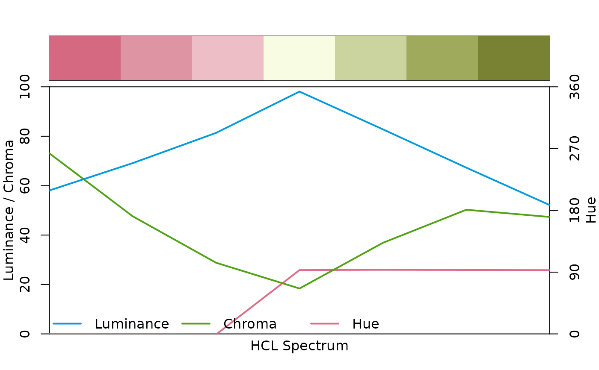

divergingx_hcl.RdDiverging HCL color palettes generated through combination of two fully flexible (and possibly unbalanced) multi-hue sequential palettes.
divergingx_hcl(n, palette = "Geyser", ..., rev = FALSE, h1, h2, h3, c1, c2, c3, l1, l2, l3, p1, p2, p3, p4, cmax1, cmax2) divergingx_palettes(palette = NULL, plot = FALSE, n = 7L, ...)
| n | the number of colors (\(\ge 1\)) to be in the palette. |
|---|---|
| palette | character with the name (see details). |
| … | arguments passed to |
| rev | logical. Should the palette be reversed? |
| h1 | numeric. Starting hue coordinate. |
| h2 | numeric. Center hue coordinate. |
| h3 | numeric. Ending hue coordinate. |
| c1 | numeric. Chroma coordinate corresponding to |
| c2 | numeric. Chroma coordinate corresponding to |
| c3 | numeric. Chroma coordinate corresponding to |
| l1 | numeric. Luminance coordinate corresponding to |
| l2 | numeric. Luminance coordinate corresponding to |
| l3 | numeric. Luminance coordinate corresponding to |
| p1 | numeric. Power parameter for chroma coordinates in first sequential palette. |
| p2 | numeric. Power parameter for luminance coordinates in first sequential palette (if |
| p3 | numeric. Power parameter for chroma coordinates in second sequential palette (if |
| p4 | numeric. Power parameter for luminance coordinates in second sequential palette (if |
| cmax1 | numeric. Maximum chroma coordinate in first sequential palette (not used if |
| cmax2 | numeric. Maximum chroma coordinate in second sequential palette (if |
| plot | logical. Should the selected HCL color palettes be visualized? |
A character vector with (s)RGB codings of the colors in the palette.
The divergingx_hcl function simply calls sequential_hcl
twice with a prespecified set of hue, chroma, and luminance parameters. This is
similar to diverging_hcl but allows for more flexibility:
diverging_hcl employs two single-hue sequential palettes,
always uses zero chroma for the neutral/central color, and restricts the
chroma/luminance path to be the same in both “arms” of the palette.
In contrast, divergingx_hcl relaxes this to two full multi-hue
palettes that can thus go through a non-gray neutral color (typically light
yellow). Consequently, the chroma/luminance paths can be rather unbalanced
between the two arms.
With this additional flexibility various diverging palettes suggested by http://ColorBrewer.org/ and CARTO (https://carto.com/carto-colors/) can be emulated.
Available CARTO palettes: ArmyRose, Earth, Fall, Geyser, TealRose, Temps, and
Tropic (with Tropic also available in diverging_hcl).
Available ColorBrewer.org palettes: PuOr, RdBu, RdGy, PiYG, PRGn, BrBG, RdYlBu, RdYlGn, Spectral.
## show emulated CARTO/ColorBrewer.org palettes divergingx_palettes(plot = TRUE)## compared to diverging_hcl() the diverging CARTO palettes are typically warmer ## but also less balanced with respect to chroma/luminance, see e.g., specplot(divergingx_hcl(7, "ArmyRose"))